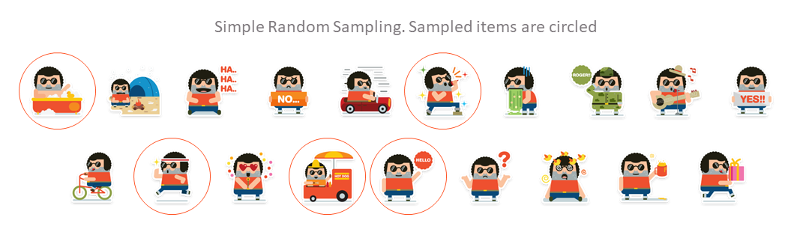
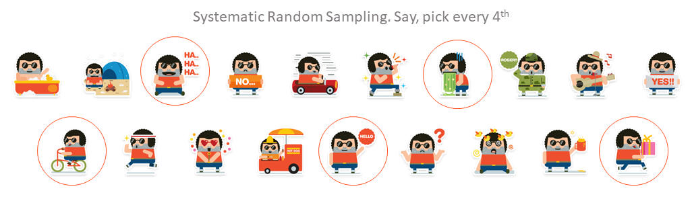
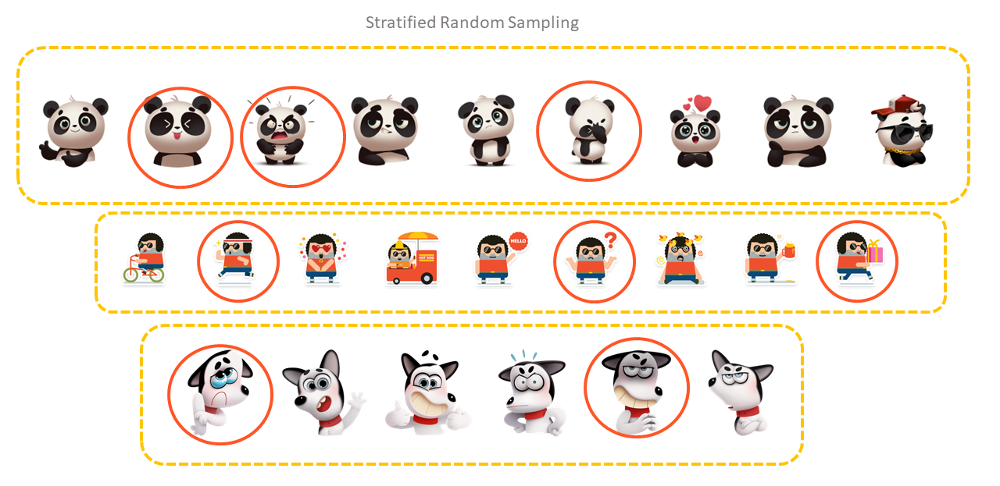

27 Random Sampling
A district office of a department makes about four thousand payments in a year. The auditor has a few weeks, and cannot examine every voucher. So the auditor examines some of them, and draws a conclusion about all of them. This is audit sampling. Two questions decide whether the conclusion can be trusted. Was the sample selected fairly, so that no voucher was kept out of reach? And were the errors found in the sample projected to the whole population, with an allowance for chance?
International Standard on Auditing (ISA) 5301 defines audit sampling as follows.
The application of audit procedures to less than 100% of items within a population of audit relevance such that all sampling units have a chance of selection in order to provide the auditor with a reasonable basis on which to draw conclusions about the entire population.
ISA 530 also describes statistical sampling. It has two features. The sample items are selected at random. And probability theory is used to evaluate the results, including a measure of sampling risk.
Appendix 4 of ISA 530 describes the different methods of selecting a sample. In this chapter, we will carry out each of them in R, reproducibly, on the payment vouchers of an imaginary office. Then we will see how to work out sample sizes. Finally, we will select and evaluate a complete monetary unit sample, using the probability functions of Chapter 26.
Why use R for sampling, when audit software and spreadsheets can also draw samples? Because a sample drawn in R is fully documented by its code. Anyone can run the same code, with the same seed, and get exactly the same sample. That is the best evidence that the selection was random and was not manipulated.
Prerequisites
27.1 Our population, a year of payment vouchers
Let us create the payment vouchers of an imaginary divisional office for 2024-25. The office makes payments through six district units. Each voucher has a number, a date, the district, the head of expenditure and the amount. The vouchers are numbered in the order of their dates. There are 4,000 vouchers, mostly small, with a few very large ones.
For each voucher we also keep the audited amount. This is the correct amount, which the auditor would find on examining the voucher. We have planted misstatements in 240 vouchers, where the amount paid is more than the correct amount. In real audit, of course, we do not know the audited amounts until we examine the sample. We will use them only at the end, in Section 27.8.
Code to create the payment vouchers
set.seed(530)
n_pop <- 4000
districts <- c("Bhopal", "Indore", "Jabalpur", "Gwalior", "Sagar", "Rewa")
heads <- c("Office expenses", "Materials and supplies", "Minor works",
"Hiring of vehicles", "Professional services", "Machinery and equipment")
payments <- tibble(
voucher_date = sort(as.Date("2024-04-01") + sample(0:364, n_pop, replace = TRUE)),
district = sample(districts, n_pop, replace = TRUE,
prob = c(0.25, 0.22, 0.18, 0.15, 0.12, 0.08)),
head = sample(heads, n_pop, replace = TRUE),
amount = round(rlnorm(n_pop, log(40000), 1.2))
) |>
mutate(voucher_no = sprintf("PV-%05d", row_number()), .before = 1)
# A few very large payments
big <- sample(1:n_pop, 6)
payments$amount[big] <- round(runif(6, 3e6, 8e6))
payments$head[big] <- "Machinery and equipment"
# Planted misstatements. The audited (correct) amount is less than the amount paid
payments <- payments |> mutate(audited = amount)
mis <- sample(1:n_pop, 240)
payments$audited[mis] <- round(payments$amount[mis] * (1 - runif(240, 0.2, 1)))payments# A tibble: 4,000 × 6
voucher_no voucher_date district head amount audited
<chr> <date> <chr> <chr> <dbl> <dbl>
1 PV-00001 2024-04-01 Rewa Materials and supplies 34383 34383
2 PV-00002 2024-04-01 Gwalior Minor works 5260 5260
3 PV-00003 2024-04-01 Gwalior Materials and supplies 43795 43795
4 PV-00004 2024-04-01 Gwalior Minor works 40300 40300
5 PV-00005 2024-04-01 Gwalior Professional services 29662 29662
6 PV-00006 2024-04-01 Gwalior Materials and supplies 21766 21766
7 PV-00007 2024-04-02 Jabalpur Minor works 77833 77833
8 PV-00008 2024-04-02 Bhopal Minor works 30919 30919
9 PV-00009 2024-04-02 Bhopal Minor works 14285 4181
10 PV-00010 2024-04-02 Bhopal Minor works 37259 37259
# ℹ 3,990 more rowsThe 4,000 vouchers are worth ₹34.54 crore in all. Let us see how they are spread over the districts.
27.2 Simple random sampling, with and without replacement
In this method, vouchers are selected completely at random, as if by random number tables. Refer to Figure 27.1 for an illustration. The two functions behind it are sample() and set.seed(), which we met in Section 4.9. sample() works on vectors. For data frames we use dplyr::slice_sample(), which we met in Section 13.7.

Let us draw a sample of n = 12 vouchers, without replacement.
set.seed(123)
srs <- payments |>
slice_sample(n = 12, replace = FALSE)
srs |>
select(voucher_no, voucher_date, district, head, amount)# A tibble: 12 × 5
voucher_no voucher_date district head amount
<chr> <date> <chr> <chr> <dbl>
1 PV-02463 2024-11-07 Jabalpur Professional services 35524
2 PV-02511 2024-11-11 Indore Professional services 54687
3 PV-02227 2024-10-17 Bhopal Hiring of vehicles 16501
4 PV-00526 2024-05-17 Indore Hiring of vehicles 466107
5 PV-00195 2024-04-17 Sagar Professional services 50358
6 PV-02986 2024-12-25 Gwalior Hiring of vehicles 6134
7 PV-01842 2024-09-12 Bhopal Materials and supplies 55316
8 PV-01142 2024-07-12 Bhopal Hiring of vehicles 44914
9 PV-03371 2025-01-31 Indore Minor works 3843
10 PV-01253 2024-07-22 Sagar Machinery and equipment 12435
11 PV-01268 2024-07-23 Bhopal Professional services 27285
12 PV-01038 2024-07-03 Indore Hiring of vehicles 41815The syntax is simple. First we fix the random number seed, so that the same sample can be drawn again. Then slice_sample() selects n = 12 vouchers without replacement (replace = FALSE).
If the sample size is a proportion, we use the argument prop, like prop = 0.10 for 10%, instead of n. If sampling is with replacement, we use replace = TRUE. In audit we almost always sample without replacement, since there is no point in examining the same voucher twice.
27.3 Systematic random sampling
ISA 530 describes this approach in some detail. The number of sampling units in the population is divided by the sample size. This gives a sampling interval, say 50. A starting point is chosen within the first 50, and every 50th unit after it is selected. The starting point is best chosen by a random number generator. ISA 530 also warns that the population must not have a pattern which matches the interval. Refer to Figure 27.2 for an illustration.

The selection runs through the population in its existing order, here the order of voucher numbers. That is the point of the method. It spreads the sample evenly over the whole population, which here means over the whole year. We carry it out in two steps.
Step 1. Choose the sample size n. Divide the number of rows by n to get the sampling interval s. Choose a random starting point s1 between 1 and s.
Step 2. Select the rows s1, s1 + s, s1 + 2s, and so on, until we have n rows. slice() selects rows by their position.
set.seed(123)
n <- 24 # sample size
s <- floor(nrow(payments) / n) # sampling interval
s1 <- sample(1:s, 1) # random start
rand_seq <- seq(s1, by = s, length.out = n)
sys_sample <- payments |>
mutate(row = row_number(), .before = 1) |>
slice(rand_seq)
sys_sample |>
select(row, voucher_no, voucher_date, district, amount)# A tibble: 24 × 5
row voucher_no voucher_date district amount
<int> <chr> <date> <chr> <dbl>
1 159 PV-00159 2024-04-14 Bhopal 80269
2 325 PV-00325 2024-04-29 Rewa 39292
3 491 PV-00491 2024-05-14 Gwalior 13022
4 657 PV-00657 2024-05-29 Bhopal 163684
5 823 PV-00823 2024-06-14 Bhopal 31217
6 989 PV-00989 2024-06-28 Gwalior 40631
7 1155 PV-01155 2024-07-13 Jabalpur 177025
8 1321 PV-01321 2024-07-28 Gwalior 14144
9 1487 PV-01487 2024-08-12 Bhopal 98468
10 1653 PV-01653 2024-08-27 Rewa 65660
# ℹ 14 more rowsThe interval here is 166 and the random start is 159. So rows 159, 325, 491 and so on were selected. Let us check how the sample is spread over the months.
# A tibble: 12 × 2
month n
<ord> <int>
1 Jan 2
2 Feb 2
3 Mar 2
4 Apr 2
5 May 2
6 Jun 2
7 Jul 2
8 Aug 2
9 Sep 2
10 Oct 2
11 Nov 2
12 Dec 2Every month of the year is in the sample, with two vouchers each. This happened because the vouchers are arranged by date, and the selection is spread evenly through them. A simple random sample of the same size could, by chance, miss a month altogether.
Do not shuffle the data before systematic selection. Shuffling destroys the order, and turns the method into simple random sampling. Also check, as ISA 530 says, that the population has no pattern which matches the interval. For example, if a pay bill lists employees in groups of 10, with the supervisor always tenth, an interval of 10 would select either all supervisors or none.
27.4 Probability proportionate to size (PPS) selection
In this method, larger items have a larger chance of selection, in proportion to their size, usually their monetary value. ISA 530 calls the best known form of it monetary unit sampling. It describes it as follows.
A type of value-weighted selection in which sample size, selection and evaluation results in a conclusion in monetary amounts.
slice_sample() can select records with probability in proportion to a column, through its argument weight_by. Let us select 12 vouchers with probability proportional to their amount.
set.seed(123)
pps <- payments |>
slice_sample(n = 12, weight_by = amount)
pps |>
select(voucher_no, voucher_date, district, head, amount)# A tibble: 12 × 5
voucher_no voucher_date district head amount
<chr> <date> <chr> <chr> <dbl>
1 PV-00278 2024-04-24 Bhopal Materials and supplies 395598
2 PV-03244 2025-01-19 Indore Materials and supplies 67867
3 PV-03489 2025-02-12 Indore Machinery and equipment 246525
4 PV-01963 2024-09-24 Indore Materials and supplies 41170
5 PV-01844 2024-09-12 Gwalior Minor works 26427
6 PV-02718 2024-11-30 Jabalpur Machinery and equipment 3671138
7 PV-03156 2025-01-11 Bhopal Office expenses 161126
8 PV-01351 2024-07-31 Jabalpur Professional services 38600
9 PV-01141 2024-07-12 Gwalior Machinery and equipment 151867
10 PV-03567 2025-02-19 Bhopal Materials and supplies 200898
11 PV-01378 2024-08-02 Indore Machinery and equipment 21813
12 PV-01611 2024-08-24 Bhopal Hiring of vehicles 202972Compare this with the simple random sample drawn earlier.
# A tibble: 2 × 2
sample median_amount
<chr> <dbl>
1 Simple random 38670.
2 Proportionate to size 156496.The median voucher in the PPS sample is ₹1.56 lakh. In the simple random sample it is only ₹38,670. The larger vouchers, where a misstatement would matter most, now get more of the auditor’s attention.
This is a quick way to give larger items a larger chance. But it is not exactly monetary unit sampling. For that, we need a systematic selection of rupees, which also allows the results to be evaluated statistically. We will see it in Section 27.8.
27.5 Stratified random sampling
ISA 530 defines stratification as follows.
The process of dividing a population into sub-populations, each of which is a group of sampling units which have similar characteristics (often monetary value).
So stratified random sampling means applying any of the above methods to each stratum separately, instead of to the whole population. Refer to Figure 27.3 for an illustration.

We form the strata with a grouping column, and then sample within each group as above.
Case 1. The same sample size for every stratum. Say we want 2 vouchers from each district. The district is already a column in the data.
set.seed(123)
payments |>
slice_sample(n = 2, by = district) |>
select(voucher_no, district, head, amount)# A tibble: 12 × 4
voucher_no district head amount
<chr> <chr> <chr> <dbl>
1 PV-02146 Rewa Office expenses 15444
2 PV-00123 Rewa Minor works 130981
3 PV-01302 Gwalior Office expenses 84141
4 PV-00779 Gwalior Minor works 19597
5 PV-01621 Jabalpur Minor works 186117
6 PV-01271 Jabalpur Materials and supplies 12727
7 PV-02567 Bhopal Minor works 44906
8 PV-02357 Bhopal Office expenses 35748
9 PV-02790 Indore Materials and supplies 78896
10 PV-03601 Indore Hiring of vehicles 9461
11 PV-01776 Sagar Office expenses 37152
12 PV-00856 Sagar Hiring of vehicles 586794The argument by of slice_sample() samples within each group, without the need for group_by() and ungroup().
Case 2. A different sample size or proportion for each stratum. This time, the stratum is not directly available in the data. Most audits stratify by value, so that large vouchers are examined more heavily. Say we want to sample
- 1% of vouchers up to ₹50,000,
- 5% of vouchers above ₹50,000 and up to ₹5 lakh, and
- 25% of vouchers above ₹5 lakh.
Our strategy has four steps. We create the stratum with cut(). We split the data into one data frame per stratum with group_split(). We sample each with its own proportion using purrr::map2(). And we bind the samples back into one data frame with list_rbind(). We learnt map2() in Section 7.5.
# define proportions, in the order of the strata
props <- c(Low = 0.01, Mid = 0.05, High = 0.25)
payments <- payments |>
mutate(stratum = cut(amount, c(0, 5e4, 5e5, Inf),
labels = c("Low", "Mid", "High")))
set.seed(123)
strat_sample <- payments |>
# one data frame per stratum
group_split(stratum) |>
# sample each with its own proportion, and bind the results
map2(props, \(d, p) slice_sample(d, prop = p)) |>
list_rbind()Let us check how many vouchers were selected from each stratum, and what share of the value they cover.
payments |>
summarise(total = n(), value = sum(amount), .by = stratum) |>
left_join(strat_sample |>
summarise(selected = n(), selected_value = sum(amount), .by = stratum),
by = "stratum") |>
mutate(value_covered = scales::percent(selected_value / value, accuracy = 1)) |>
select(stratum, total, selected, value_covered) |>
arrange(stratum)# A tibble: 3 × 4
stratum total selected value_covered
<fct> <int> <int> <chr>
1 Low 2324 23 1%
2 Mid 1607 80 4%
3 High 69 17 27% The sample has only 120 vouchers, about 3% of the population. Yet it covers about 9% of the total value, because the high value stratum was sampled heavily.
cut() puts each value into the band whose upper limit it does not exceed. So a voucher of exactly ₹50,000 falls in the “Low” stratum. Check the boundaries against the audit plan, and record them in the working papers.
27.6 Cluster sampling
ISA 530 does not define cluster sampling separately. Here, instead of individual vouchers, we select whole groups of vouchers, called clusters. We then examine every voucher in the selected clusters. For example, we may select a few districts, or a few months, and examine all vouchers in them. Let us select 2 districts.
Our strategy is to first sample from the unique values of the cluster column, and then keep all records of those clusters.
# A tibble: 2 × 2
district n
<chr> <int>
1 Jabalpur 714
2 Sagar 468Cluster sampling is convenient, since the audit party has to visit only the selected districts. But vouchers within one district tend to be alike. So a cluster sample tells us less about the whole population than a simple random sample of the same size.
27.7 How many items to test? Sample size for tests of controls
So far we took the sample size as given. In audit, the size depends on how confident we want to be, and how much error we can tolerate. Let us start with tests of controls, where each item either complies with the control or deviates from it. For example, each voucher either carries the sanction of the competent authority or it does not.
Suppose we want to be 95% confident that the true rate of deviation is below a tolerable rate of 5%. Suppose also that we expect to find no deviations. In Section 26.5, we saw that the reliability factor for zero errors at 95% confidence is about 3.00. The sample size is simply
\[ n = \frac{\text{reliability factor}}{\text{tolerable rate}} \tag{27.1}\]
[1] 60The exact binomial calculation gives nearly the same answer. It is the smallest sample in which the chance of finding no deviation, if the true rate were 5%, is 5% or less.
The table below shows how the sample size changes with the tolerable rate and the confidence level.
expand_grid(confidence = c(0.90, 0.95), tolerable_rate = c(0.02, 0.05, 0.10)) |>
mutate(sample_size = ceiling(qgamma(confidence, 1) / tolerable_rate)) |>
pivot_wider(names_from = confidence, values_from = sample_size,
names_prefix = "confidence_")# A tibble: 3 × 3
tolerable_rate confidence_0.9 confidence_0.95
<dbl> <dbl> <dbl>
1 0.02 116 150
2 0.05 47 60
3 0.1 24 30A lower tolerable rate, or a higher confidence, needs a bigger sample. If deviations are expected, we use the reliability factor for that number of deviations instead. This gives a bigger sample still.
27.8 Audit use case, monetary unit sampling of payments
Monetary unit sampling (MUS) is the most widely used statistical method for testing the amounts in accounts. Its idea is simple. Instead of thinking of the population as a list of vouchers, we think of it as a list of rupees. We select rupees at random, systematically, and examine the voucher containing each selected rupee. So a voucher of ₹10 lakh is a hundred times more likely to be selected than one of ₹10,000. This is what an auditor wants, since overstatement hides in large amounts.
The audit question is this. Are the payments of the year free from material overstatement? We return to the payments population created at the start of the chapter.
book_value <- sum(payments$amount)
book_value / 1e7 # in crore[1] 34.5366327.8.1 Step 1, sample size
The auditor decides the tolerable misstatement. It is the largest total misstatement which would not change the opinion. Let us take it as 2% of the book value. With 95% confidence and no misstatement expected, the sample size is
\[ n = \frac{\text{book value} \times \text{reliability factor}}{\text{tolerable misstatement}} \tag{27.2}\]
So we will select one rupee in every ₹23.02 lakh, from a random start.
27.8.2 Step 2, selection
We line up the vouchers one after another, and keep a running total of their amounts with cumsum(). Each selected rupee falls within one voucher. findInterval() tells us which.
set.seed(2025)
start <- runif(1, 0, interval) # random start
selected_rupees <- start + interval * (0:(n_mus - 1))
voucher_row <- findInterval(selected_rupees, c(0, cumsum(payments$amount)),
left.open = TRUE)
mus_sample <- payments |>
slice(unique(voucher_row)) |>
mutate(top_value = amount >= interval)
nrow(mus_sample)[1] 144sum(mus_sample$top_value)[1] 9We get 144 vouchers, a few less than 150. A voucher larger than the interval contains more than one selected rupee, but is examined only once. Every voucher larger than the interval is certain to be selected. There are 9 such top value items here. Many auditors examine all such items separately, outside the sample.
27.8.3 Step 3, evaluation
Now we examine the selected vouchers. In our simulation, this means comparing amount with audited. For each misstatement, the tainting is the misstatement as a share of the amount. A voucher of ₹1 lakh which should have been ₹60,000 has a tainting of 0.4.
# A tibble: 12 × 7
voucher_no district amount audited misstatement tainting top_value
<chr> <chr> <dbl> <dbl> <dbl> <dbl> <lgl>
1 PV-00066 Bhopal 300500 137204 163296 0.543 FALSE
2 PV-00456 Gwalior 70111 6164 63947 0.912 FALSE
3 PV-01006 Sagar 130196 83868 46328 0.356 FALSE
4 PV-01487 Bhopal 98468 2932 95536 0.970 FALSE
5 PV-01833 Jabalpur 229971 8934 221037 0.961 FALSE
6 PV-02511 Indore 54687 2713 51974 0.950 FALSE
7 PV-02898 Jabalpur 45213 30942 14271 0.316 FALSE
8 PV-03128 Bhopal 35043 9160 25883 0.739 FALSE
9 PV-03173 Bhopal 193523 119646 73877 0.382 FALSE
10 PV-03592 Jabalpur 3114105 1591126 1522979 0.489 TRUE
11 PV-03747 Indore 59496 24572 34924 0.587 FALSE
12 PV-03928 Sagar 1395542 440144 955398 0.685 FALSE Each error in an ordinary item represents its whole sampling interval. So its projected misstatement is its tainting times the interval. Errors in top value items are not projected. They are counted at their actual amount, since all such items were examined.
The upper misstatement limit adds an allowance for sampling risk. It starts with the basic precision, the reliability factor for zero errors times the interval. To this it adds each tainting, largest first, weighted by the increase in the reliability factor. This is the standard method of evaluating a monetary unit sample.
ordinary <- errors |> filter(!top_value) |> arrange(desc(tainting))
k <- nrow(ordinary)
factors <- qgamma(0.95, 0:k + 1) # reliability factors for 0, 1, ... k errors
top_misstatement <- sum(errors$misstatement[errors$top_value])
projected <- interval * sum(ordinary$tainting) + top_misstatement
upper_limit <- interval * (factors[1] + sum(ordinary$tainting * diff(factors))) +
top_misstatement
tibble(measure = c("Projected misstatement", "Upper misstatement limit",
"Tolerable misstatement"),
crore = round(c(projected, upper_limit, tolerable) / 1e7, 2))# A tibble: 3 × 2
measure crore
<chr> <dbl>
1 Projected misstatement 1.86
2 Upper misstatement limit 3.27
3 Tolerable misstatement 0.69We found 12 misstatements in the sample. The upper misstatement limit of ₹3.27 crore is above the tolerable misstatement of ₹0.69 crore. So, at 95% confidence, the auditor cannot conclude that the payments are free from material misstatement. More work is needed, or the misstatement must be reported.
Since this population is simulated, we can also see the truth. The actual total misstatement is ₹1.2 crore. The projection was ₹1.86 crore. The actual figure is below the upper limit, as it should be 95 times out of 100.
27.8.4 What the auditor does next
- Confirm each error. Discuss every misstatement found with the office, and get its explanation in writing.
- Look for a pattern. Let us see whether the errors cluster in one district or one head of expenditure.
errors |> count(district, sort = TRUE)# A tibble: 5 × 2
district n
<chr> <int>
1 Bhopal 4
2 Jabalpur 3
3 Indore 2
4 Sagar 2
5 Gwalior 1errors |> count(head, sort = TRUE)# A tibble: 5 × 2
head n
<chr> <int>
1 Office expenses 4
2 Machinery and equipment 3
3 Hiring of vehicles 2
4 Materials and supplies 2
5 Professional services 1- Extend the work if needed. If the errors are spread across districts and heads, as here, the problem is in the general controls over payments. The auditor may extend the sample, or ask the office to review all payments of the year.
- Report. Put the projected misstatement and the upper limit in the working papers, along with the seed, the random start and the interval.
With no errors, the projected misstatement is zero, and the upper limit is just the basic precision, \(3.00 \times\) interval. By the way we chose the sample size, this equals the tolerable misstatement. So a sample without errors supports exactly the conclusion we planned for.
Record the seed, the random start, the interval, and the R code in the working papers. Anyone can then reproduce the selection exactly. Also note that sample() in R changed its method in R version 3.6.0. Samples drawn with the same seed in older versions will differ. Mention the R version used, which R.version.string gives.
27.9 A suggested workflow
- Define the population and check it is complete, by reconciling its total with the accounts.
- Decide the method. Attribute sampling for controls, monetary unit sampling for amounts, stratification when the population has very different kinds of items.
- Decide the confidence level and tolerable rate or misstatement, and compute the sample size with the reliability factor.
- Set the seed and select the sample with code, and save the selected list.
- Examine the selected items and record the errors.
- Evaluate. Project the errors to the population, and compare the upper limit with what is tolerable.
- Document the seed, the code and the R version, so that the sample can be reproduced.
A sample gives a conclusion about the population only if it was selected randomly and evaluated statistically. Some samples are chosen haphazardly. In others, the errors are only listed and not projected. Such samples support conclusions about those items alone.
27.10 Where next
- Chapter 28 shows how to test whether a difference seen in the data, or in a sample, is more than chance.
- Section 44.12 shows how clusters found in the data can serve as strata for sampling.
27.11 Summary of functions used
| Function | Package | What it does |
|---|---|---|
set.seed(), sample()
|
base R | Reproducible random selection from a vector |
slice_sample(n, prop, weight_by, replace, by) |
dplyr | Random sample of rows, optionally weighted or within groups |
slice() |
dplyr | Rows at given positions, for systematic selection |
month() |
lubridate | Month of a date, to check the spread of a sample over the year |
cut(), group_split()
|
base R, dplyr | Form strata, and split the data by stratum |
map2(), list_rbind()
|
purrr | Sample each stratum with its own proportion, and bind the samples |
qgamma(), pbinom()
|
base R (stats) | Reliability factors and exact binomial checks for sample sizes |
cumsum(), findInterval()
|
base R | Locate the vouchers containing the selected rupees, in monetary unit sampling |